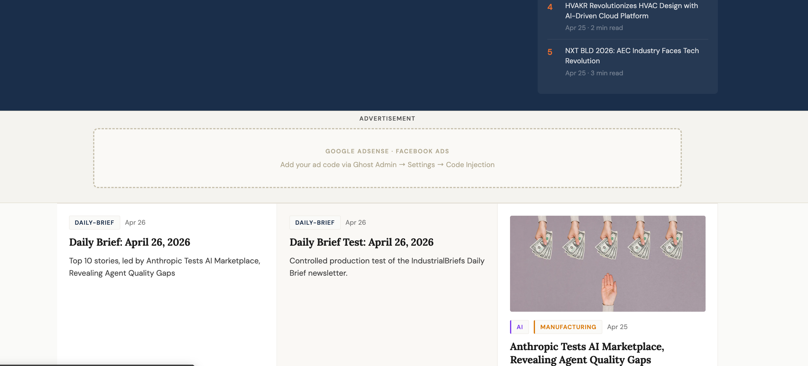
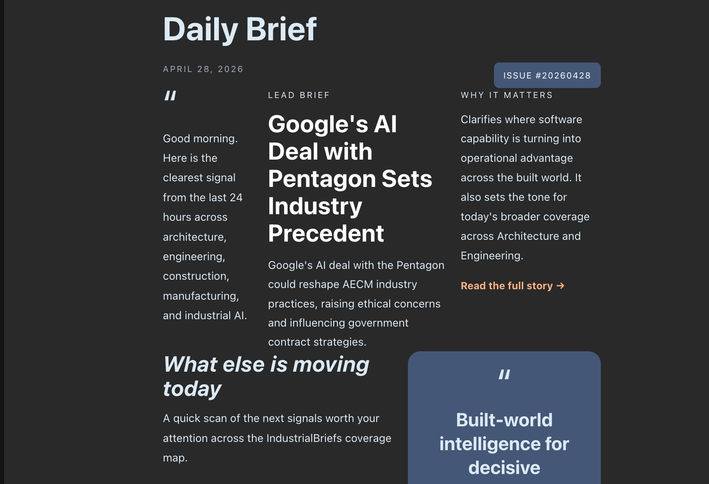
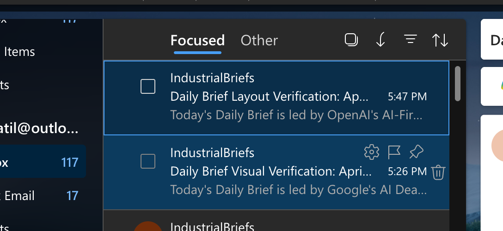

AI agents that write the news. A website that ships it. What started as a plan is now a
newsroom running 24/7 — connected end-to-end, and sharper with every revision.
Phase 2 built the AI newsroom. Phase 3 built the reader experience. In Version 5 they run as a
single loop — agents research and write, the site publishes and distributes, and the whole thing improves itself.
The Newsroom · was Phase 2
16 agents, working like a company
A Scout finds stories across 27 sources, a Writer drafts them with GPT-4o, an SEO agent
optimises, and a Publisher ships to the live site — with Clustering, Fact-Sheet and Content-Intelligence
agents enriching everything in parallel. Maintainer and Error-Handler agents keep it healthy 24/7.
The Reader Experience · was Phase 3
A site with Apple-level polish
Modern dark UI, editorial headlines, mobile-first bottom-tab navigation, hot-keyword
highlighting, and an MCP "Use in AI" panel so ChatGPT, Claude and Perplexity can read the newsroom directly.
Sub-1.5s load, credible over flashy.
FIG.02 How the agents connect
The workflow, mapped
Every box is a live n8n agent. The main line is the publishing pipeline; the lane above
enriches it; the ops layer keeps it running; and every stage reads and writes to one shared Supabase data plane.
Nothing here was built once and left alone. Each revision tightened the loop — and the core agents
were re-shipped as they learned: Scout v1→v3, Writer v1→v3.1, Publisher v1→v3.
V1Strategy & Master PlanShipped
The full blueprint — data-pipeline architecture, tech-stack decisions, SEO playbook,
GPT-readable design, and an MCP server plan. The map before the build.
V2Agent ArchitectureShipped
The AI newsroom designed like a company — Scout, Writer, and Publisher as the core
worker agents, with a safety layer and clear hand-offs between them.
V3Website & UI LockedShipped
The reader experience — modern dark theme, editorial type, mobile-first
navigation, hot-keyword highlighting, and the MCP connection panel. The New UI.
V4Pipeline Live · 24/7Shipped
The switch flipped — Scout v3, Writer and Publisher running on their own around the
clock, publishing straight to Ghost. The plan became a working machine.
V5Intelligence UpgradeNow — Live
Where it stands today — Clustering, Fact-Sheet, SEO and Content-Intelligence
agents added on top of the core pipeline, plus Contracts, LinkedIn and a Daily Brief.
16 agents, 2,495+ articles, 100% SEO coverage, zero errors a day.
FIG.04 The New UI
What readers actually see
The live reader website — the same design language throughout, and content the agents produced
automatically.

Article Feed
The live homepage — auto-published stories, trending strip, sector sections.

Daily Brief
The 9AM digest agent — top stories bundled and sent to members automatically.

In the Inbox
Newsletters landing with readers — the distribution half of the loop.
Modern dark UIEditorial headlinesMobile-first bottom tab barHot-keyword highlightingMCP "Use in AI" panel<1.5s load